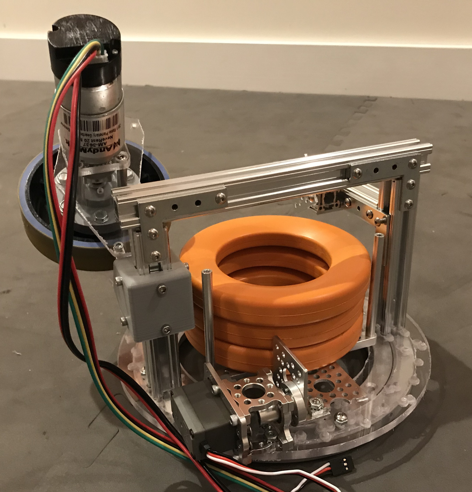
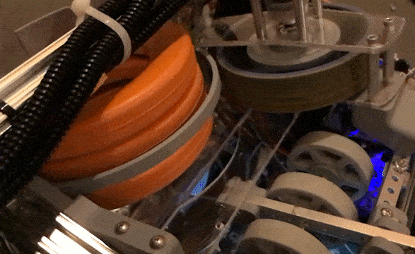
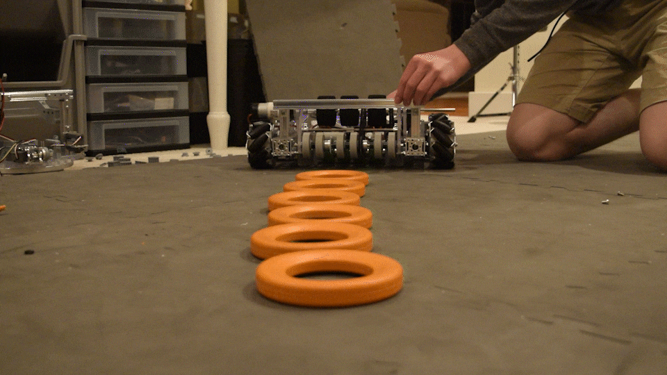
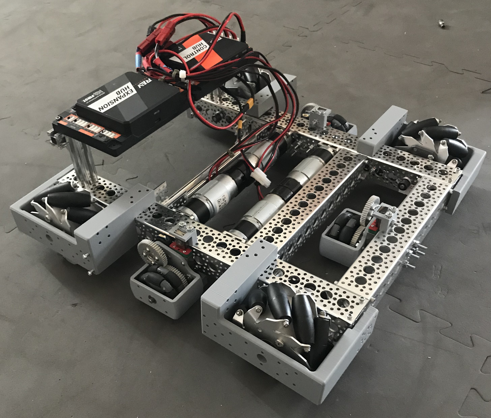
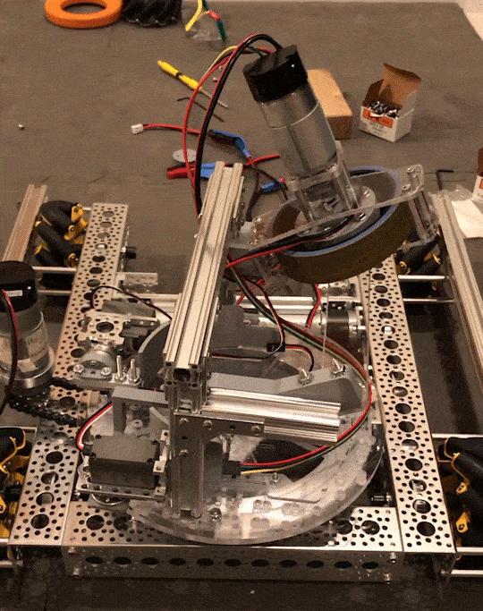

This robot, created for FIRST Tech Challenge's "Ultimate Goal" game, was the first project where I did all of the robot's programming in addition to mechanical design. I completed a full robot assembly in SolidWorks before building, and I also opted to build a simpler proof-of-concept robot first. This helped to test core mechanisms like the single-flywheel launcher before I moved on to more complex designs like the turret system that rotates the launcher. There were no actual Ultimate Goal competitions due to the pandemic.
The first prototype launcher - I built it in about an hour. The 3D-printed wall pieces had slotted screwholes to allow the compression of the foam disc to be adjusted; here they had become rather loose from the flywheel vibration.
An early turret prototype. The discs were loaded horizontally onto a platter, and then a servo tilted them up to match the angle of the flywheel.
Slow-motion clip of three discs (the maximum the robot can possess at once) being launched. An servo-actuated arm, not seen here, pushes each ring from the back. The end of the clip shows the ring platter fold down into its loading position; rings would then inserted from the intake. The final set of grey silicone intake wheels can be seen to the right, as well as a lever that prevents rings from bouncing out of the platter after they have been loaded.
An early test (actual speed) of the intake. A spring-loaded roller with silicone wheels contacts the rings first; they are then funneled to the center of the robot.
Later prototypes showed that having the discs travel in an arc around the flywheel was unnecessary, so the launcher could be more compact. Here I was testing whether the relatively light flighwheel could maintain enough speed to rapid-fire discs at a consistent velocity.
The robot's mecanum drivetrain. Note the 3 free-spinning odometry wheel modules, which provide a means for measuring the robot's location and heading.
The turret mounted to a prototype drivetrain. I later decided to omit the turret functionality in my first proof-of-concept robot, as it would be too difficult to load it with discs using a simpler intake.